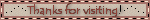

(비교하며 읽어주세요)
닮은꼴이 존재한다는 사실은 정말 재밌다. 다 다르게 태어났다고 하는데 어쩜 이렇게 닮은건지 복제인간이 의심되는 사람들이 몇몇 있다.
정려원과 아오이 유우, 엄지윤과 홀란드 등 국적을 초월하면서 닮은
경우도 있다. 나무위키에 닮은꼴 유명인 항목이 있을 정도로 우리나라 사람들은 닮은꼴 찾기에 진심이다. 내 주변도 예외는 아닌 듯한 것이, 내 닮은꼴을 쏙쏙 찾아와서 나에게 알려준다. 지금부터 시간순으로 한준희의 닮은꼴을 알아보도록 하자.
우선 이게 제 얼굴입니다..
때는 고등학교 3학년이었다. 미술학원 친구들과 대화를 나누던 중,
한 친구가 “근데 준희 누구 닮은 것 같아..? 누구지..”라며 첫 시작을 끊었다. 그 뒤로 내 닮은꼴 찾기 대결이 열리기 시작했다.
“준희 스테이시 세은 닮은 것 같아”
닮은꼴 라인업의 시작이었다. 이때 인생 최저 몸무게를 찍었던
상태라서 가능했던 닮은꼴 상대였다. 지금 생각하면 이 말 해준 친구에게 정말 고맙다.
미대입시생이라면 거의 다 해본다는 정시특강. 이 기간동안은 보통 초췌하게 다니는 게 기본값이다. 얼굴에 분칠 하나 하지않고 휘몰아치는 시험 탓에 얼굴이 노랗다 못해 초록색이 된 상태로 선릉 거리를 저벅저벅 걸어다녔다. 그런 거지 몰골로 점심시간이 주어져
밥을 먹던 중, 맞은편에 앉은 같은 학원 친구가 나에게 진지한 얼굴로 말했다.
“준희 도끼 닮은 것 같아..”
제발, 왜이래..
어린 나이에 큰 충격을 받았다. 이게 나라고? 내 생얼이 도끼라니.
집에 가자마자 창조주(어머니)께 여쭤봤다. 창조주도 인정하셨다. 그렇게 난 다음 닮은꼴이 생기기 전까지 도끼가 되었다. 이 기간동안 정말 고통스러웠다.
: ̗̀ ♡ˎˊ:나와 도끼의 오붓한 시간: ̗̀ ♡ˎˊ:
그로부터...
시간이 흘러 대입에 성공하고 난 후, 닮은꼴을 잠시 잊고 지냈을 시기였다.
대학교 1학년 시절, 나의 사랑 나의 빅애스 클럽 회원인 서영이가
나의 닮은꼴을 찾아줬다.
“준희야 너 타락천사 여자주인공 닮았어!!!!”
나는 그걸 안봤는데 ...
검색해봤더니
솔직히 잘 모르겠다..근데 서영이가 엄청 강하게 주장해서 올려봤다.
닮았나요?
대학생이 되어 맞는 첫 가을, 사람들의 닮은꼴을 잘 찾아주던 친구가 드디어 나의 닮은꼴을 찾았다며 연락을 했다.
“누나 사쿠라 닮은 것 같아.”
“근데..
지금은 아니고 데뷔초 사쿠라 닮았어.”
도끼로 인해 받은 충격이 완화되는 기분이 들었다. 예뻐진 지금이 아니라 볼살 가득한
데뷔초이긴했지만..그래도 사쿠라는 사쿠라니까..!^^ 이맘때쯤 한준희는 사쿠라 영상을 많이 찾아보며 아이유병이 아닌 사쿠라병에 걸려있었다.
학회 회의가 있던 날이었다. 회의가 시작하기 전, 라이즈 영상을 보고 있었다.
내가 좋아했던 멤버 ‘소희’를 보며 잇몸이 다 보이게 쩌억 웃고 있는데 옆자리에 앉은 동기가 언니 닮은 애가 있다고 했다.
원빈도 아니고 소희도 아니고 성찬도 아니고 누구지.
앤톤이었다.
거대한 코크기. 누가봐도 앤톤을 가리킨 것 같았다.
코가 크고 동태눈을 하고 있는 것이 닮았다고 생각했다.그래도 도끼보단 나아서 다행이었다. 그래요. 1군 남돌 닮은건 행운이지요.
대학교 2학년때, 야간작업이 가득했던 평일을 보내고 본가로 돌아왔을 때였다. 왠일로
본가에 잘 안오던 언니가 있었다. 내 얼굴을 보자마자 언니가 말했다.
“한준희, 너 솔로지옥 덱스 알아?”
(이때까지 연애 프로그램에 관심이 없어서 잘 몰랐다.)
“야 한번 봐봐. 너랑 똑같이 생겼어. 근데 너 생얼이랑 닮았음.”
하..그게 누군데요..상태로 검색했다.
나잖아.
솔직히 너무 닮아서 좀 보기 싫을 정도였다. 이 말을 듣자마자 엄청 싫어했다. 주변인들은 덱스 완전 (요즘 말로) 알파메일이라며 좋은 줄 알라고 나를 달랬다. 처음엔 분명
싫었는데 덱스가 점점 방송에 나오고 익숙해지더니 이제는 그가 무슨 행동을 하면 내
분신이 행동하는 것 같아 괜히 신경이 쓰이는 지경에 이르렀다.. 덱스의 냉터뷰가 올라올 때면 후다닥 달려가서 보는 나를 발견할 수 있었다.

: ̗̀ ♡ˎˊ:덱스와 나: ̗̀ ♡ˎˊ:
초반에 이렇게 리스트를 받을때면 괜히 나를 놀리나 생각도 들고 왜 나는 남자만 닮았지..? ㅠㅠ하면서 속도 좀 상했었다. 그런데 점점 리스트들이 쌓이니 이젠 내가 입고싶은 옷을 닮은꼴이 입으면‘오 내가 입으면 저렇겠구나..’하고 좋아하는 연예인과 닮은꼴이 함께 서있으면
‘오 나랑 저 연예인이 서있으면 저런 비주얼이겠구나’하면서 좋은 정보를 얻을 수 있다는 장점을 발견했다! 이후로도 많은 닮은꼴 제보가 들어오길 바라며.. 글을 마치겠다.
저는 언제나 제보를 기다립니다.
+) 실리지 못했던 닮은꼴들 : 배우 김하늘, 배우 유태오, 제로베이스원 한유진, 코드쿤스트, 엔믹스 배이, 손담비, 기희현, 러블리즈 미주
